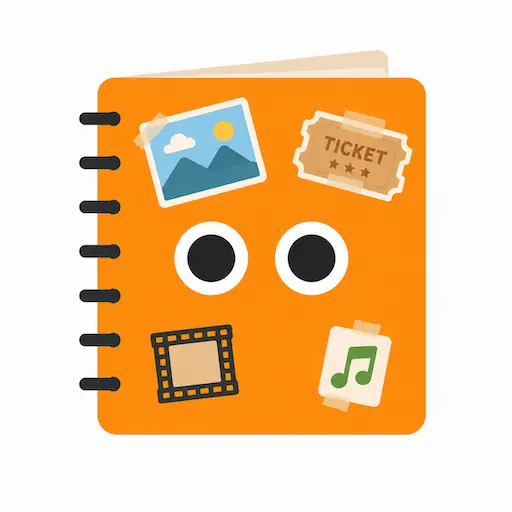
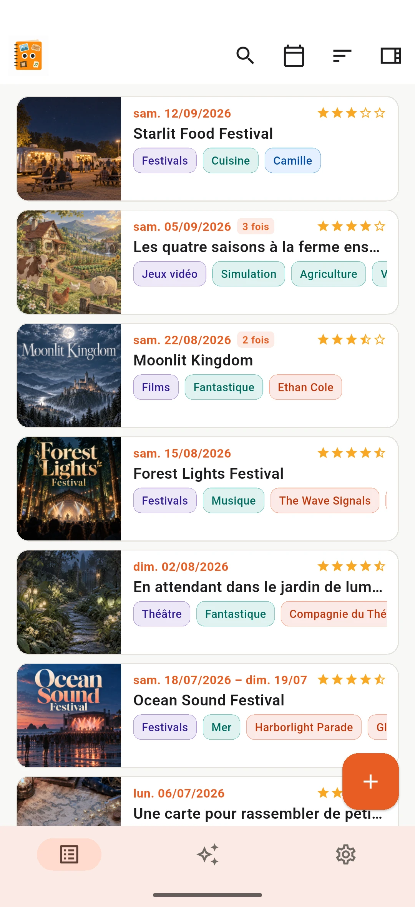
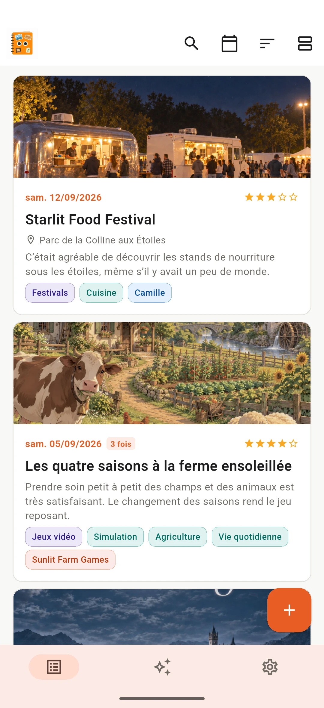
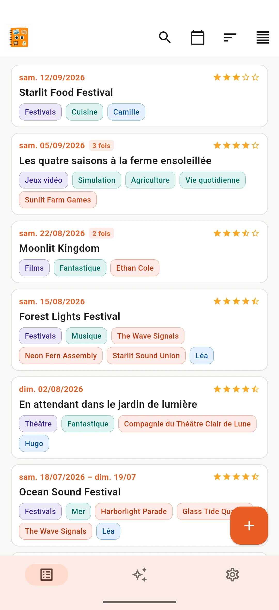
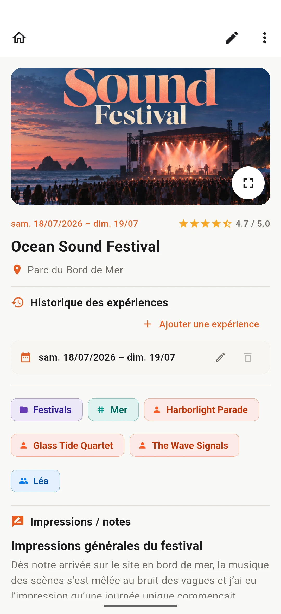
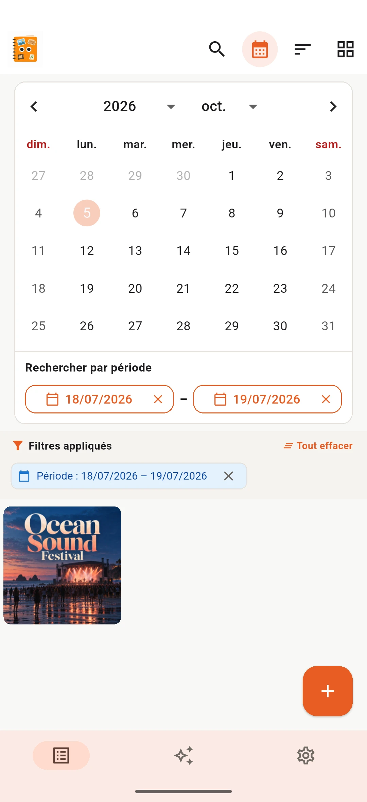
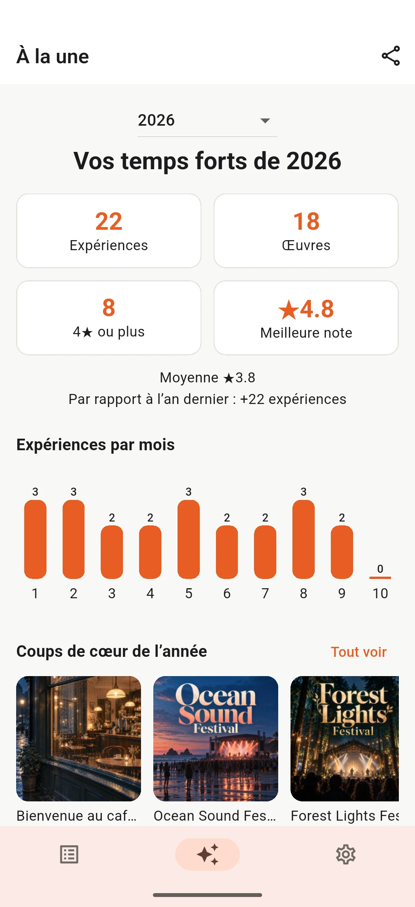
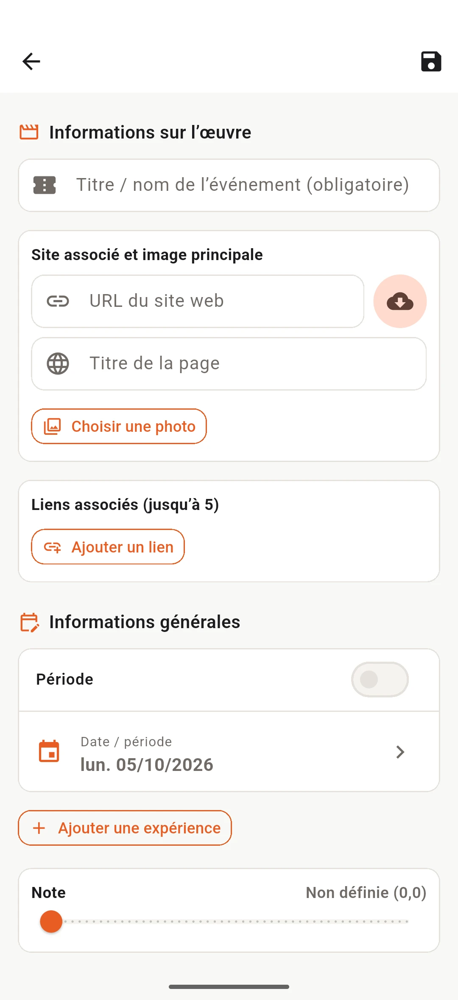

GRATUIT
Jusqu’à 20 entrées
- Toutes les fonctions essentielles incluses

Mita-MonMita-Mon
Films, anime, mangas, livres, concerts, théâtre, jeux et bien plus. Rassemblez ce que vous aimez dans votre histoire personnelle.
RETROUVER
« Qu’ai-je regardé récemment ? » « À quels concerts suis-je allé l’an dernier ? » Mita-Mon rassemble vos souvenirs de tous les genres pour les parcourir, les retrouver et les revivre plus tard.
TOUT AU MÊME ENDROIT
Films, livres et événements en direct se retrouvent dans une seule liste. Changez de vue et retrouvez vos entrées grâce à la recherche, au tri et aux filtres.




Ouvrez une entrée pour revoir vos notes, évaluations et images. Le calendrier permet de retrouver vos souvenirs par date.


À RETENIR
Retrouvez au même endroit vos entrées, meilleures notes, catégories, tags, artistes, accompagnants et expériences répétées.

Nouvelle entrée
Vous n’avez pas besoin de tout remplir. Commencez par l’essentiel et complétez plus tard si vous le souhaitez.

CONFIDENTIALITÉ ET VOS DONNÉES
Vos entrées sont enregistrées sur votre appareil. Aucun compte n’est nécessaire et Mita-Mon ne stocke pas vos expériences ni vos notes sur les serveurs de l’éditeur.
Vous pouvez exporter vos entrées et images dans un fichier de sauvegarde et le conserver en lieu sûr.
Mita-Mon
Films, livres, concerts et plus encore. Rassemblez ce que vous aimez et retrouvez-le à tout moment.